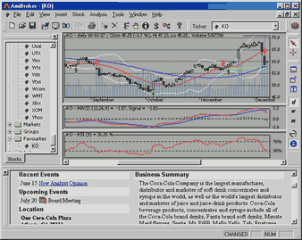

Profile view pane is an embedded web browser that allows you to view both online company profiles as well as pages stored locally on your hard disk.

You can define URL template for viewing online (or offline) company profiles.
These URL templates are market-based, which means you can have different templates
for each market. The template is then parsed to make the actual URL for the web page.
For example, to see Yahoo's profiles page you can use the following URL template:
http://biz.yahoo.com/p/{t0}/{t}.html. Symbols enclosed in brackets {} define
fields that are evaluated at execution time. The {t0} symbol is evaluated to the
first character of the ticker name and {t} is evaluated to the whole ticker
name. So, if AAPL is selected, AmiBroker will generate the following URL from above
template: http://biz.yahoo.com/p/a/aapl.html
Then AmiBroker uses a built-in web browser to display the contents of the page.
Note that it is also possible to browse local files using this mechanism. Simply
use the following template URL (example; C: denotes drive): file://C:\the_folder_with_profile_files\{t}.html.
You are not limited to HTML files, you can use simple TXT files instead.
As shown in the above example, a template URL can contain special fields that are substituted at runtime by values corresponding to the currently selected symbol. The format of the special field is {x} where x describes the field type. Currently there are five allowable field types: ticker symbol in original case {t}, ticker symbol in lowercase {s}, ticker symbol in UPPERCASE {S}, alias {a}, and web ID {i}. You can specify those fields anywhere within the URL and AmiBroker will replace them with appropriate values entered in the Information window.
You can also reference single characters of ticker, alias, or web ID. This is useful when a given website uses the first characters of, for example, a ticker to group HTML files (the Yahoo Finance site does that), so you have files for tickers beginning with 'a' stored in subdirectory 'a'. To reference a single character of the field, use the second format style {xn} where x is the field type described above and n is the zero-based index of the character. So, {a0} will evaluate to the first character of the alias string. To get the first two characters of a ticker, simply write {t0}{t1}.
Note about the web ID field: this new field in the Information window was added to handle situations when websites do not use ticker names for storing profile files. I found some sites that use their own numbering system, so they assign a unique number to each symbol. AmiBroker allows you to use this nonstandard coding for viewing profiles. All you have to do is to enter the correct IDs in the Web ID field and use the appropriate template URL with the {i} keyword.